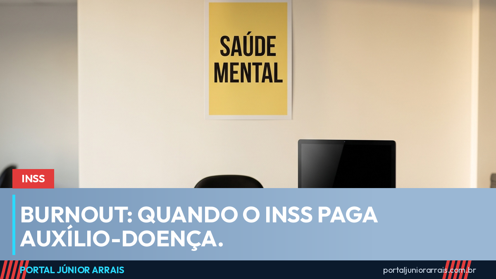

Burnout dá auxílio-doença? O que o INSS e a Justiça do Trabalho reconhecem

Sim: o esgotamento profissional, conhecido como burnout, pode dar direito a benefício do INSS — mas não pelo diagnóstico em si, e sim pela incapacidade para o trabalho que ele provoca. É a regra que vale para qualquer doença: o que o INSS avalia é se a pessoa consegue ou não trabalhar. No Setembro Amarelo, mês dedicado à saúde mental, o portal explica como isso funciona na prática.
O que é burnout, segundo a lei
A Organização Mundial da Saúde descreve o burnout como um fenômeno ligado ao trabalho, resultado de estresse crônico que não foi administrado, com três marcas: exaustão, distanciamento do trabalho e queda de desempenho. No Brasil, o esgotamento profissional está na Lista de Doenças Relacionadas ao Trabalho do Ministério da Saúde, atualizada pela Portaria GM/MS 1.999, de novembro de 2023, ao lado de transtornos de ansiedade e depressão. Estar nessa lista facilita reconhecer que a doença tem origem no trabalho.
Quando o INSS paga
Os primeiros 15 dias de afastamento são pagos pela empresa, como em qualquer atestado — o portal detalhou isso em até quando a empresa paga e quando o INSS entra. A partir do 16º dia, entra o auxílio por incapacidade temporária, o antigo auxílio-doença, que depende de perícia ou de análise documental. O laudo precisa mostrar a incapacidade: sintomas, tratamento em curso, medicação e por que a pessoa não consegue exercer a função. Um diagnóstico sem essa descrição costuma ser negado.
A diferença que o nexo com o trabalho faz
Se ficar reconhecido que o esgotamento foi causado ou agravado pelo trabalho, o benefício passa a ser acidentário (espécie B91), e não o comum (B31). A distinção muda três coisas:
- a empresa é obrigada a emitir a Comunicação de Acidente de Trabalho (CAT);
- o FGTS continua sendo depositado durante todo o afastamento;
- ao voltar, o empregado tem 12 meses de estabilidade no emprego, pelo artigo 118 da Lei 8.213/91.
Essa ligação pode ser reconhecida pela perícia do INSS, com base na lista do Ministério da Saúde e no histórico da função, ou pela Justiça do Trabalho, quando a empresa contesta. Nesta semana, o Supremo confirmou as teses do TST sobre estabilidade por doença do trabalho, inclusive nos casos em que não houve afastamento longo.
O que a empresa tem de fazer
Desde 2025, a Norma Regulamentadora 1 exige que o empregador inclua os riscos psicossociais — sobrecarga, metas abusivas, assédio, jornada excessiva — no seu programa de gerenciamento de riscos. Não é obrigação de resultado, mas é prova: uma empresa que ignorou o risco tem mais dificuldade de negar a origem ocupacional da doença. Em caso de assédio, o portal explicou o que muda com a Convenção 190 da OIT.
Quando vira aposentadoria
Se o quadro não melhora e não há como readaptar a pessoa a outra função, pode-se chegar à aposentadoria por incapacidade permanente. É exceção, não regra, e exige que a perícia conclua pela impossibilidade de reabilitação. O portal reuniu as diferenças no guia sobre auxílio-doença e aposentadoria por incapacidade.
Cuidado com golpe
Quem está esgotado e fragilizado é alvo fácil. Circulam perfis que prometem "laudo pronto para burnout", "afastamento em 48 horas" ou "aprovação sem perícia" em troca de pagamento antecipado, além de mensagens pedindo senha da conta do governo para "agendar a perícia por você". O INSS não cobra taxa, não pede senha e não trabalha com intermediário desse tipo; laudo falso, além de não passar, pode virar problema criminal para quem usa.
Se você está afastado, teve o benefício negado ou desconfia que a doença tem relação com o trabalho, procure um profissional de sua confiança para organizar os laudos, avaliar o nexo e acompanhar o pedido.
Conteúdo informativo — não substitui orientação individualizada sobre o seu caso.
Júnior Arrais · Editor do Portal Júnior Arrais
Comunicador de Ubá (MG). Escreve todos os dias sobre benefícios sociais, INSS, trabalho e economia do dia a dia, a partir do Diário Oficial, de portarias e de fontes oficiais, em linguagem simples. Conheça a linha editorial e a política de correções do portal.